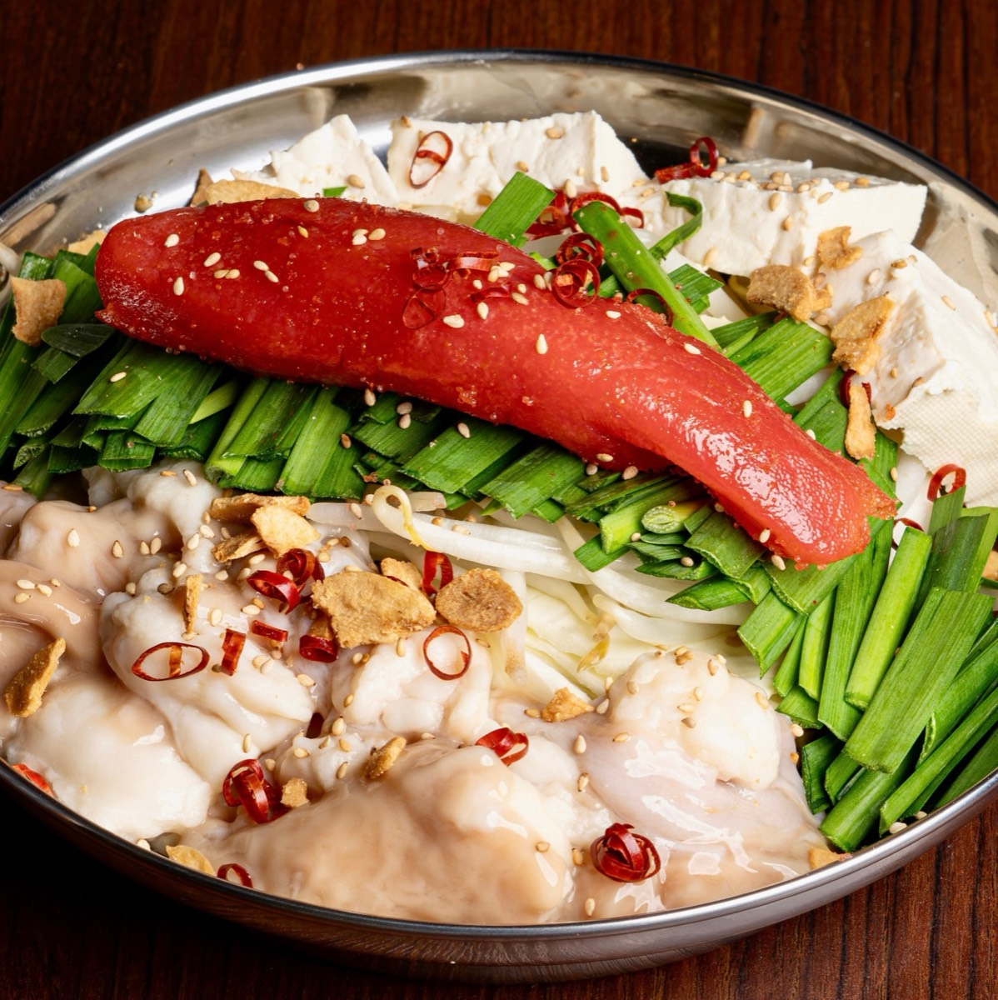

INVITATIONご招待
Foy PRODUCE ｜ 博多中洲屋台村
なんしょっと？中野北口店
11.30MON19:00–22:00
Foy 来場◆飲食無料◆交通費支給
グランドオープンに先立ち、
著名人・グルメインフルエンサーの方を
限定でお招きするプレオープンです。
当日はプロデューサーのFoyも参加します。
PRIVILEGESゲスト特典
01
店内のSNS撮影は自由当日はみなさまのコンテンツの撮影にご利用いただけます
02
お食事・ドリンクの無料提供
03
交通費を支給当日、領収書と引き換えにお支払いします。領収書がない場合は、区間と金額をお申し出ください
04
グランドオープン前の特別先行体験

INFORMATION開催概要
- 店名
- 博多中洲屋台村 なんしょっと？ 中野北口店
- 日時
- 2026年11月30日（月）
19:00〜22:00 - 場所
- 東京都中野区中野5-56-14 岡田ビル2F
Googleマップで開く - 参加費
- 無料
- 参加形式
- 完全招待制
- プロデュース
- Foy（NOEZ FOXX）
TIME TABLEタイムテーブル
- 受付・お席へのご案内交通費の精算、QRオーダーのご説明、ドリンクのご提供
- 代表挨拶
- Foy挨拶・乾杯
- お食事・ご歓談・撮影交流
- ラストオーダー
- 全体記念撮影
- 閉会・お見送り
ご参加の可否は、
ご案内をお送りした担当者へ
ご返信ください。
皆さまのお越しを、心よりお待ちしております。